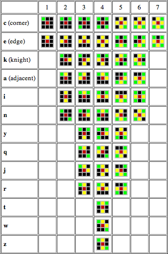

The Generations algorithm supports rules similar to Life but with an extra history component that allows cells to have up to 256 states. The rule notation is "0..8/1..8/n" where the 1st set of digits specify the live neighbor counts necessary for a cell to survive to the next generation. The 2nd set of digits specify the live neighbor counts necessary for a cell to be born in the next generation. The final number n specifies the maximum number of cell states (from 2 to 256).
Here are some example rules:
| 2367/3457/5 | [Banners] | - an exploding rule by Mirek Wojtowicz. | ||
| 234/34678/24 | [Bloomerang] | - an expanding rule by John Elliott. | ||
| /2/3 | [Brian's Brain] | - a chaotic rule by Brian Silverman. | ||
| 124567/378/4 | [Caterpillars] | - a chaotic rule by Mirek Wojtowicz. | ||
| 23/2/8 | [Cooties] | - an exploding rule by Rudy Rucker. | ||
| 2/13/21 | [Fireworks] | - an exploding rule by John Elliott. | ||
| 12/34/3 | [Frogs] | - a chaotic rule by Scott Robert Ladd. | ||
| 12345/45678/8 | [Lava] | - an expanding rule by Mirek Wojtowicz. | ||
| 012345/458/3 | [Lines] | - a stable rule by Anders Starmark. | ||
| 345/2/4 | [Star Wars] | - an exploding rule by Mirek Wojtowicz. | ||
| 3456/2/6 | [Sticks] | - an exploding rule by Rudy Rucker. | ||
| 345/26/5 | [Transers] | - an exploding rule by John Elliott. | ||
| 1456/2356/16 | [Xtasy] | - an exploding rule by John Elliott. |
Other rules in this family, along with more detailed descriptions, can be found at Mirek Wojtowicz's MCell website. See also the Patterns/Generations folder which contains a number of interesting patterns extracted from the MCell pattern collection.
The above rules use the Moore neighborhood, where each cell has 8 neighbors. In the von Neumann neighborhood each cell has only the 4 orthogonal neighbors. To specify this neighborhood just append "V" to the usual notation and use neighbor counts ranging from 0 to 4.
Note that when viewing patterns at scales 1:8 or 1:16 or 1:32, Golly displays diamond-shaped icons for rules using the von Neumann neighborhood and circular dots for rules using the Moore neighborhood.
Golly can emulate a hexagonal neighborhood on a square grid by ignoring the NE and SW corners of the Moore neighborhood so that every cell has 6 neighbors:
NW N NE NW N W C E -> W C E SW S SE S SETo specify a hexagonal neighborhood just append "H" to the usual notation and use neighbor counts ranging from 0 to 6. Editing hexagonal patterns in a square grid can be somewhat confusing, so to help make things a bit easier Golly displays slanted hexagons (in icon mode) at scales 1:8 or 1:16 or 1:32.
All of the above rules are classified as "totalistic" because the outcome depends only on the total number of neighbors. Golly also supports non-totalistic rules for Moore neighborhoods — such rules depend on the configuration of the neighbors, not just their counts.
The syntax used to specify a non-totalistic rule is based on a notation developed by Alan Hensel. It's very similar to the above notation but uses various lowercase letters to represent unique neighborhoods. One or more of these letters can appear after an appropriate digit (which must be from 1 to 7, depending on the letters). The usual counts of 0 and 8 can still be used without letters since there is no way to constrain 0 or 8 neighbors. Letter strings can get quite long, so it's possible to specify their inverse using a "-" between the digit and the letters.
The following table shows which letters correspond to which neighborhoods. The central cell in each neighborhood is colored red, corner neighbors are green, edge neighbors are yellow and ignored neighbors are black:

The table makes it clear which digits are allowed before which letters. For example, /1a/8 and /5z/8 are both invalid rules.
Golly uses the following steps to convert a given non-totalistic rule into its canonical version:
The totalistic and non-totalistic rules above are only a small subset of all possible rules for a 2-state Moore neighborhood. The Moore neighborhood has 9 cells which gives 512 (2^9) possible combinations of cells. For each of these combinations you define whether the output cell is dead or alive, giving a string of 512 digits, each being 0 (dead) or 1 (alive).
0 1 2 3 4 5 -> 4' 6 7 8The first few entries for Conway's Life in Generations form (23/3/2) in this format are as follows:
Cell 0 1 2 3 4 5 6 7 8 -> 4' 0 0 0 0 0 0 0 0 0 0 -> 0 1 0 0 0 0 0 0 0 0 1 -> 0 2 0 0 0 0 0 0 0 1 0 -> 0 3 0 0 0 0 0 0 0 1 1 -> 0 4 0 0 0 0 0 0 1 0 0 -> 0 5 0 0 0 0 0 0 1 0 1 -> 0 6 0 0 0 0 0 0 1 1 0 -> 0 7 0 0 0 0 0 0 1 1 1 -> 1 B3 8 0 0 0 0 0 1 0 0 0 -> 0 9 0 0 0 0 0 1 0 0 1 -> 0 10 0 0 0 0 0 1 0 1 0 -> 0 11 0 0 0 0 0 1 0 1 1 -> 1 B3 ... 19 0 0 0 0 1 0 0 1 1 -> 1 S2 ... 511 1 1 1 1 1 1 1 1 1 -> 0This creates a string of 512 binary digits:
00000001000100000001...0This binary string is then base64 encoded for brevity giving a string of 86 characters:
ARYXfhZofugWaH7oaIDogBZofuhogOiAaIDogIAAgAAWaH7oaIDogGiA6ICAAIAAaIDogIAAgACAAIAAAAAAAABy prefixing this string with "MAP" the syntax of the rule becomes:
rule = MAP<base64_string>/<states>So, Conway's Life in Generations (23/3/2) form encoded as a MAP rule is:
rule = MAPARYXfhZofugWaH7oaIDogBZofuhogOiAaIDogIAAgAAWaH7oaIDogGiA6ICAAIAAaIDogIAAgACAAIAAAAAAAA/2Given each MAP rule has 512 bits and there are 255 different Generations states (2 to 256) this leads to 255*2^512 (roughly 3.42x10^156) unique rules. Totalistic rules are a subset of isotropic non-totalistic rules which are a subset of MAP rules.
MAP rules can also be specified for Hexagonal and von Neumann neighborhoods.
Hexagonal neighborhoods have 7 cells (center plus 6 neighbors) which gives 128 (2^7) possible combinations of cells. These encode into 22 base64 characters.
Von Neumann neighborhoods have 5 cells (center plus 4 neighbors) which gives 32 (2^5) possible combinations of cells. These encode into 6 base64 characters.
For any of the neighborhoods the base64 encoding can optionally be postfixed with two base64 padding characters: "==".